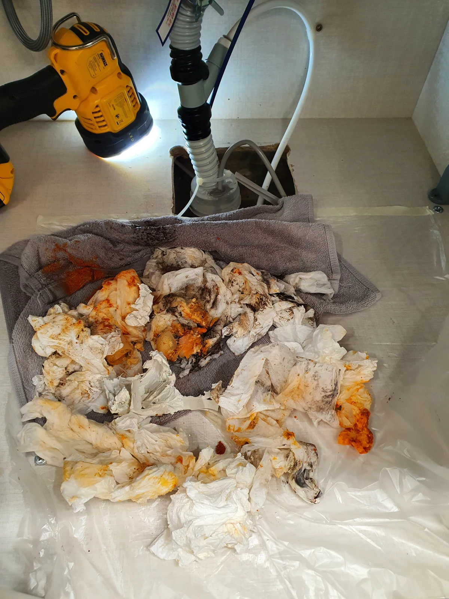
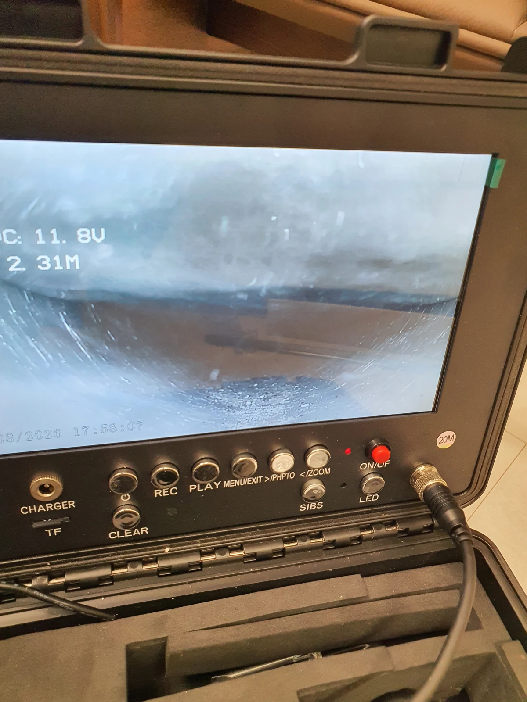

구로구 싱크대막힘 현장 도착과 진단
하수구 뚫는 업체를 찾을 때 작업 후 어떤 확인이 필요할까요? 서울 구로구에서 싱크대 물이 역류하는 증상으로 방문한 현장입니다. 싱크대 아래 바닥 쪽 배관에서는 냄새도 올라오고 있었습니다. 물이 원활하게 빠져나가지 못하는 상황이라 싱크대막힘 원인을 확인하고, 배수 경로 중 어느 부분을 작업해야 하는지 판단하는 것이 먼저였습니다. 겉으로 보이는 배수구만 정리해서 끝낼 수 있는지, 연결된 배관 안쪽까지 살펴야 하는지 구분할 필요가 있었습니다.
냄새가 난다는 사실만으로 기름때가 원인이라고 단정하지는 않습니다. 이번에는 초입부 작업을 진행한 뒤 내시경으로 내부를 검사했고, 가로로 이어지는 횡주관 전반에 기름때가 쌓여 있는 것을 확인했습니다. 싱크대막힘 증상과 실제 배관 상태를 연결해 원인을 판단한 것입니다. 하수구막힘 상담으로 문의하셨더라도 주방의 어느 배수 경로에서 문제가 생겼는지 확인하는 과정은 같습니다.
싱크대가 막혔을 때 물을 계속 틀면 역류하는 물이 늘어날 수 있으므로 우선 사용을 멈추는 것이 좋습니다. 상담할 때에는 역류 위치와 하부에서 올라오는 냄새, 이미 시도한 조치 등을 알려주세요. 신라건축설비는 베테랑 기사들의 현장 경험을 바탕으로 필요한 점검부터 안내합니다. 이번 구로구 싱크대막힘 사례도 초입부와 안쪽 배관을 나누어 확인하며 작업 범위를 정했습니다.
1단계: 초입 배관 상태 확인과 필요한 처리
첫 단계에서는 배관 초입부에 석션 작업을 진행했습니다. 입구 쪽에 있는 오염물을 먼저 흡입하고, 이후 안쪽을 살펴볼 수 있도록 작업을 시작한 것입니다. 초입부의 기름때를 정리하는 일과 횡주관 전체 상태를 확인하는 일은 구분해야 합니다. 싱크대막힘 원인이 입구에만 있는지 아직 확인되지 않았기 때문에 첫 작업만으로 마무리하지 않고 내시경 검사를 이어갔습니다.
내시경으로 살펴보니 횡주관 부분 전반에 기름때가 끼어 있었습니다. 물이 이동해야 할 가로 배관 안에 오염물이 쌓여 있었으므로, 초입부에서 흡입한 부분만으로는 전체 작업 범위를 설명할 수 없었습니다. 싱크대 바로 아래에서 보이는 상태와 실제 배관 내부 상태가 다를 수 있다는 점을 보여주는 현장이었습니다. 내시경 점검은 이런 차이를 확인하고 다음 작업을 정하는 근거가 됩니다.
신라건축설비는 장비를 무조건 늘려 사용하는 방식보다 확인한 상태에 맞춰 필요한 방법을 선택하는 것을 중요하게 생각합니다. 이번 싱크대막힘 현장에서는 기름때가 있는 범위를 확인했기 때문에 샤프트 작업으로 이어졌습니다. 고객님께는 무엇을 확인했고 다음 작업이 왜 필요한지 이해하기 쉬운 말로 설명하는 소통을 지향합니다. 작업 범위와 진행 이유를 함께 안내하는 것이 합리적인 시공의 출발점입니다.

2단계: 하부배관 기름때 제거와 통수 확인
횡주관에 쌓인 기름때를 제거하기 위해 샤프트를 투입했습니다. 배관 안쪽에 붙어 있는 오염물을 풀어내 배수 통로를 확보하는 것이 이 단계의 목적이었습니다. 초입부에서 흡입하는 석션과 배관 안쪽을 작업하는 샤프트는 역할이 다릅니다. 이번 싱크대막힘 작업에서는 내시경으로 확인한 횡주관의 오염 상태에 맞춰 방법을 이어서 적용했습니다.
샤프트로 기름때를 제거한 뒤에는 물을 함께 흘려 풀어진 오염물이 입상관 방향으로 배출되도록 작업했습니다. 가로로 이어지는 배관 안에서 기름때를 풀어내는 것과, 풀어진 물질이 배수 흐름을 따라 이동하도록 하는 과정을 함께 진행한 것입니다. 여기서 입상관은 가로 배관에서 흘러온 물이 이어지는 세로 배관을 뜻합니다. 이번 작업은 기름때 제거와 물을 이용한 배출 과정으로 구분해 설명할 수 있습니다.
구로구 싱크대막힘 현장에서 중요했던 점은 눈앞의 역류만 잠시 줄이는 데서 멈추지 않고, 확인한 기름때 구간을 작업 대상으로 삼았다는 것입니다. 석션 이후 내부 검사로 범위를 정하고 샤프트와 배출 작업을 연결했습니다. 작업 사진에도 싱크대 하부 배관과 실제 사용 장비, 주변 보호 상태가 함께 담겨 있습니다.

작업 결과와 재발 방지
기름때 제거와 배출 작업 후에는 물을 흘려 통수 상태를 확인했습니다. 작업 전에는 역류하던 물이 작업 후 정상적으로 빠져나갔고, 누수 없이 마무리된 것도 확인했습니다. 싱크대막힘 조치는 오염물을 제거했다는 설명뿐 아니라 실제 사용할 때 배수가 되는지까지 확인해야 합니다. 이번 현장도 정상 통수와 누수 점검 결과를 바탕으로 작업을 마쳤습니다.
재발을 줄이려면 기름이 배관으로 들어가는 양을 줄이는 것이 중요합니다. 조리 후 남은 기름은 싱크대에 그대로 붓지 말고 따로 처리하고, 그릇에 묻은 기름기는 먼저 닦아낸 뒤 설거지해주세요. 음식물 찌꺼기도 거름망에서 걸러 별도로 버리는 편이 좋습니다. 이미 배수가 느려지거나 냄새와 역류가 함께 나타난다면 물만 오래 흘려 해결하려 하기보다 상태를 확인하는 것이 필요합니다.
구로구에서 싱크대 뚫는 업체를 찾으실 때에는 현재 증상에 어떤 점검이 필요한지, 첫 조치 후에는 무엇을 확인하는지 설명을 들어보세요. 신라건축설비는 경험 많은 기사들의 판단과 충분한 고객 소통, 깔끔한 시공을 중요하게 생각합니다. 싱크대막힘이 반복될 때에도 같은 원인이라고 단정하지 않고 이전 작업 내용과 현재 배수 반응을 함께 살펴 필요한 방법을 안내하겠습니다.
최종 조치: 초입부 석션과 내시경 검사 후 횡주관 기름때를 샤프트로 제거하고, 물과 함께 입상관 방향으로 배출했습니다. 싱크대막힘 작업 후 정상 통수와 누수 없는 상태를 확인했습니다.
현장 방문 전 확인하는 비용과 작업 범위
신라건축설비는 현장 증상과 배관 구조를 확인한 뒤 필요한 작업과 예상 비용을 안내합니다. 단순 관통으로 해결되는지, 배관내시경·석션·고압세척 또는 추가 장비가 필요한지는 현장 상태에 따라 달라집니다. 출장비와 야간 작업비, 추가 장비 비용이 발생할 수 있는 경우 작업 전에 먼저 설명하고 동의를 받은 범위에서 진행합니다.
업체를 선택할 때 확인할 사항
무조건적인 ‘0원’ 표현보다 실제 작업 범위, 추가 비용 조건, 사용 장비와 사후 대응 기준을 확인하는 것이 중요합니다. 해결되지 않았을 때의 비용 기준과 작업 후 동일 증상 발생 시 점검 범위를 사전에 문의해두면 불필요한 분쟁을 줄일 수 있습니다.
구로구 싱크대막힘 자주 묻는 질문
싱크대막힘은 왜 반복되나요?
주방 배수관 내부에 기름때·슬러지·음식물 찌꺼기가 누적되거나 배관 구배와 긴 횡주관 때문에 반복될 수 있습니다. 단순 관통 후 다시 막힌다면 배수관 내부 상태를 확인하는 것이 좋습니다. 이번 구로구 현장에서 확인한 원인은 다음과 같습니다. 초입부 석션 후 내시경 검사에서 횡주관 전반에 쌓인 기름때를 확인했습니다.
싱크대 물이 안 내려가거나 역류하면 싱크대뚫는업체를 불러야 하나요?
물이 천천히 빠지거나 싱크대역류가 반복되면 배수구 입구보다 안쪽 주방 배관에 막힘이 있을 수 있습니다. 현장에서는 배수 상태와 막힌 구간을 확인한 뒤 작업 방법을 정합니다.
싱크대 기름때 막힘은 약품으로 해결되나요?
가벼운 오염은 일시적으로 나아질 수 있지만 굳은 기름 슬러지와 배관 내부 스케일은 약품만으로 충분히 제거되지 않는 경우가 있습니다. 반복 막힘은 장비를 이용한 배관 청소가 필요할 수 있습니다.
싱크대뚫는업체는 어떤 장비로 작업하나요?
막힘 위치와 배관 상태에 따라 석션, 샤프트, 배관내시경, 배관 스케일링 장비 등을 사용합니다. 필요한 장비는 현장 진단 후 결정합니다.
싱크대막힘 비용은 어떻게 정해지나요?
막힘 구간의 길이와 오염 정도, 석션·샤프트·내시경 등 장비 투입 범위에 따라 달라질 수 있습니다. 작업 전 예상 범위와 추가 비용 조건을 먼저 안내합니다.
싱크대 악취도 배수관 막힘과 관련 있나요?
기름 슬러지와 음식물 오염이 배수관 내부에 쌓이면 배수 불량과 함께 악취가 나타날 수 있습니다. 다만 트랩이나 연결부 문제도 있어 현장 상태를 함께 확인해야 합니다.
싱크대막힘 서울·경기 출동지역
신라건축설비는 구로구 현장을 포함해 서울 25개 구와 경기도 31개 시·군의 배관 문제를 상담합니다. 현장 거리와 기사 배정 상황에 따라 출동 가능 여부를 먼저 안내드립니다.
서울 전 지역
강남구 · 강동구 · 강북구 · 강서구 · 관악구 · 광진구 · 구로구 · 금천구 · 노원구 · 도봉구 · 동대문구 · 동작구 · 마포구 · 서대문구 · 서초구 · 성동구 · 성북구 · 송파구 · 양천구 · 영등포구 · 용산구 · 은평구 · 종로구 · 중구 · 중랑구
경기도 주요 출동지역
수원시 · 용인시 · 고양시 · 화성시 · 성남시 · 부천시 · 남양주시 · 안산시 · 평택시 · 안양시 · 시흥시 · 파주시 · 김포시 · 의정부시 · 광주시 · 하남시 · 광명시 · 군포시 · 양주시 · 오산시 · 이천시 · 안성시 · 구리시 · 의왕시 · 포천시 · 양평군 · 여주시 · 동두천시 · 과천시 · 가평군 · 연천군